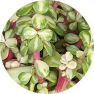

The affinity for houseplants has been in my life since I was a child. I have vivid memories of my mother in the garden, planting or potting plants. She had houseplants, but preferred the garden. Uunder her tutelage, I learned that the principles of gardening apply similarly to keeping houseplants. It is this experience, and working with houseplants that my affinity for them continues. To me, keeping houseplants is another form of creativity; an art form. Because they add to the aesthetic of your living space. The foliage green color of houseplants is joyful to me, and many others, which is why I wanted to create this website.

Information from Succulents Box